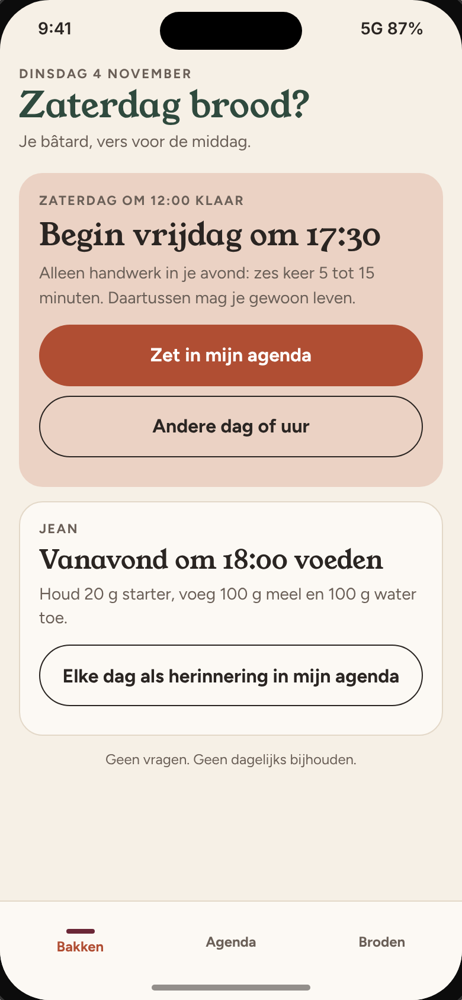
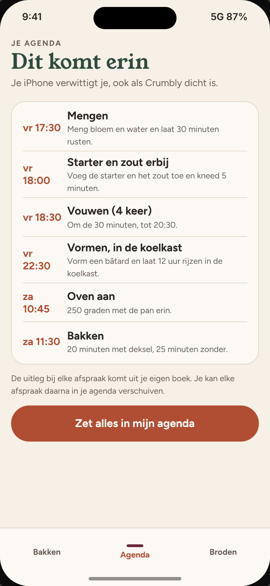
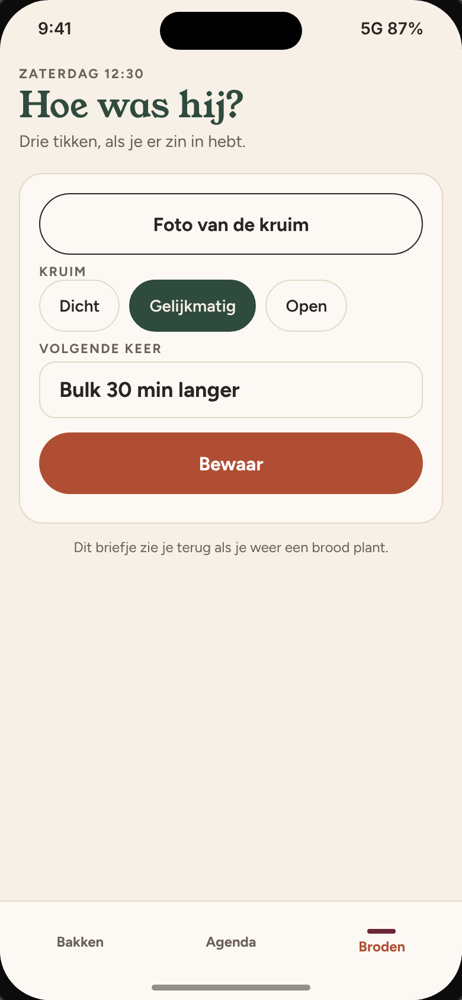

Je zei dat Crumbly je weinig oplevert, en dat de vorige versie beter was dan de laatste. Dat neem ik serieus. Ik denk dat ik te veel van je vroeg: dingen intikken, vragen beantwoorden, schermen doorlopen. Pas na weken zag je er iets voor terug.
Je geeft je recept en een dag. Crumbly rekent uit wanneer je moet beginnen en zet alles in de agenda van je iPhone, met een alarm bij elke stap en de uitleg uit je eigen boek erbij. Je iPhone verwittigt je, ook als Crumbly dicht is. Jean voeden komt ook als herinnering, met de grammen erbij. Er is niets om bij te houden.
Na het bakken kan je, als je zin hebt, drie dingen invullen: een foto, hoe de kruim was, en wat je de volgende keer anders doet.
Bakken, Agenda en na het bakken.



Alle tijden en cijfers zijn voorbeelden.
Kort antwoorden mag, ook een spraakbericht. "Geen idee" mag ook.